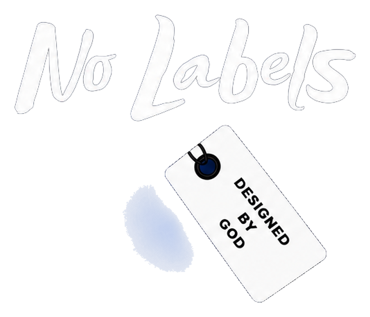

No Labels, Designed by God
Church Hurt Bible Study
Menu
Nine-part Scripture-first Bible study
Church Hurt: When the Body Wounds Its Own
Choose a study part
Copy part link
All nine parts
Life application, key truths, challenge and prayer
← Back to Bible Studies